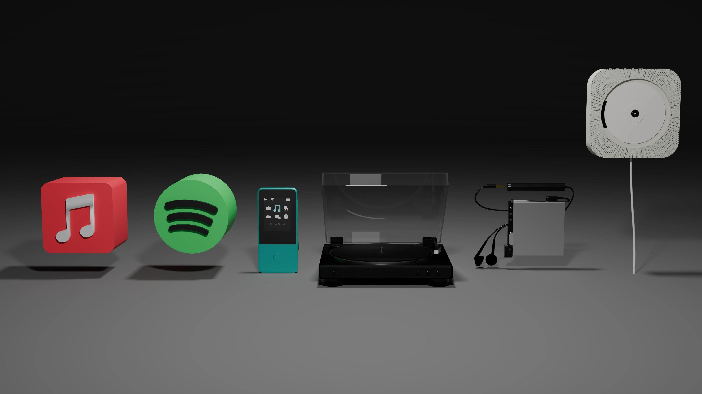

History

音楽の聴き方は、時代とともに使われる媒体の進化によって大きく変化してきました。初期のレコードは、大きな機器とともに家庭でじっくりと音楽を楽しむもので、音楽は「家で聴くもの」でした。その後、1970年代に登場したカセットテープはウォークマンなどの登場とともに持ち運びが可能になり、音楽は「外に持ち出せるもの」へと変わりました。 1980年代にはCDが普及し、音質や使いやすさが向上したことで、よりクリアで安定した音楽体験が可能になりました。続く1990年代にはMD（ミニディスク）が登場し、録音や編集ができる点で「自分だけの音楽をつくる楽しさ」が広まりました。 2000年代に入ると、MP3プレーヤーやiPodの普及によって、音楽はデータとして大量に持ち運べるようになり、いつでもどこでも手軽に楽しめるものになりました。そして2010年代以降、Apple MusicやSpotifyなどのストリーミングサービスが主流になると、音楽は「所有するもの」から「アクセスするもの」へと変化し、月額制で世界中の楽曲を聴き放題にするスタイルが定着しました。 このように、音楽の聴き方は「家で聴く」から「どこでも自由に楽しむ」へと進化し、媒体の変化は私たちの音楽体験そのものを大きく変えてきました。